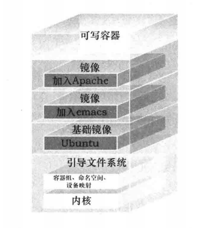

Docker入门与个人理解
Docker学习归纳理解
我们走在容器化的大道上 ——《第一本docker书》
一、前备知识
- 对于Linux相关概念的了解
- 虚拟化技术
- Linux中的容器
- Linux的资源隔离方法：namespace、cgroup等
- 操作系统
- go programming language
二、安装配置
看docker官方文档来操作，正常情况没有什么问题的。
三、相关概念
对Docker及其相关的一些领域要有较为清晰的认识。
1、Docker的工作模式
Docker是服务器——客户端的工作模式，服务端可以运行在自己主机，也可以运行在远程主机，通常使用过程中的Docker指令都是作为客户端向服务端发起请求，然后服务端返回响应。
2、镜像
镜像是Docker中非常重要的一个概念，可以将其看作创建一个容器的标准，它包含了程序运行所需的基本环境。实际使用中用到的镜像一般都是在官方的基础镜像上增加自定义配置而来，根据《第一本Docker书》中的内容，一个Docker镜像包含多层文件系统，基础镜像之上的每层文件系统可以看作是一项自定义配置，可以是额外安装某一软件等。

3、容器
如果将镜像看作一个类，那么容器就是类的实例
根据官方文档的描述，容器是镜像的可运行实例，与宿主机和其他容器相隔离（当然你可以自定义隔离的程度）。
根据镜像创建一个容器的命令为：
1 | $ docker run [OPTIONS] IMAGE [COMMAND] [ARG...] |
你可以在创建一个容器时加上自定义配置，比如上面的-t和-i选项。
你也可以在已有容器的基础上，将其当前的状态保存为一个镜像。
容器创建之后可以执行启动、删除等操作。
4、Docker仓库
存储的是镜像，一般使用最广泛的在线仓库（和github一个概念）是Docker Hub。
你可以获取他人分享的镜像，在此之上创建自己的容器，也可以自己创建镜像并分享在Docker Hub上。
四、实际操作
尚未精通，暂不记录（偷个懒先😅）